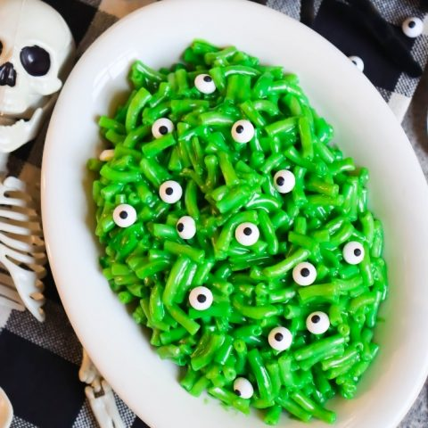

Monster Mac and Cheese

Description
Here's how to make the spookiest mac and cheese alive. You should do the monster mash while making
the Monster Mac and Cheese.
Ingredients
- Macaroni
- Green cheese
- Eyeball candy
- Monster milk
- Monster flour
- Monster butter
Steps
-
Pre heat the oven very high.
-
Add macaroni to boiling water and let boil for 8 minutes.
-
Melt the monster butter and mix with the monster flour.
-
whisk monster milk into the butter and flour mixture. Then add melted green cheese, stir aggressively.
-
Bake in the preheated oven until it looks spooky and the macaroni and cheese is screaming,
doesn't take too long.